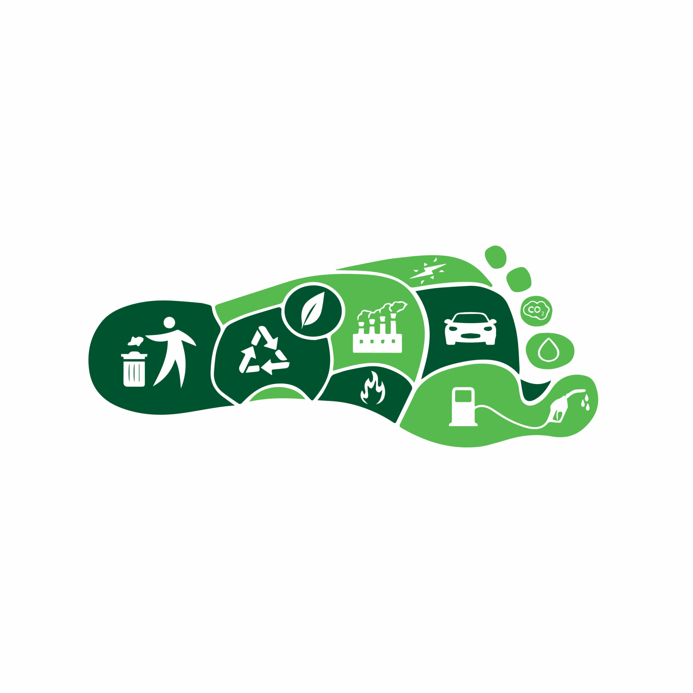
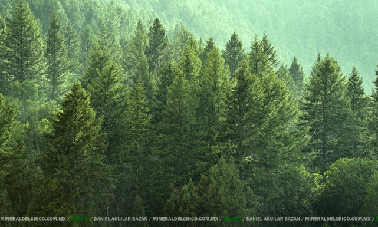
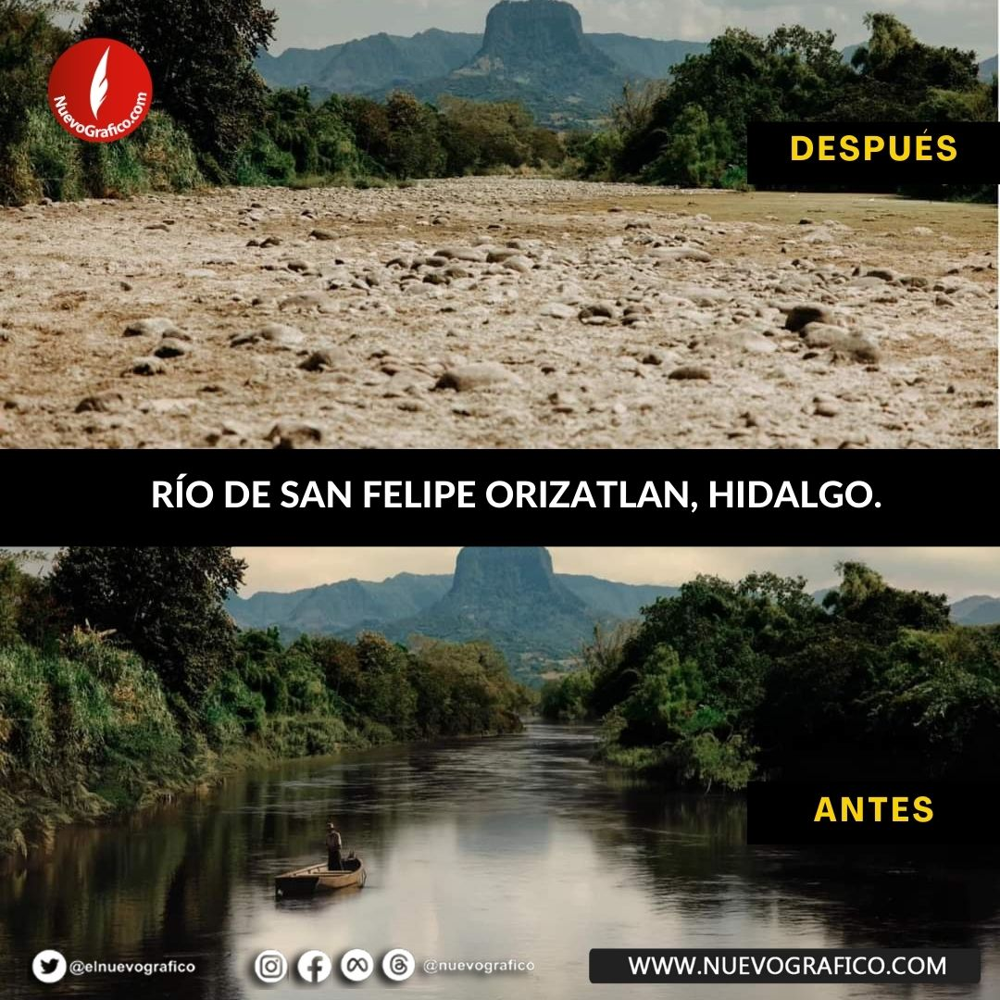

 Calcula tu Huella de Carbono Descubre tu impacto ambiental y aprende a reducirlo con material didáctico. Ir al Material
 Eventos y Voluntariado Visualiza y regístrate en las próximas actividades y oportunidades de voluntariado. Ver Eventos
 Organizaciones Aliadas Descubre organizaciones del estado con las que puedes colaborar o participar. Conocer Aliados